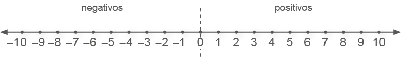
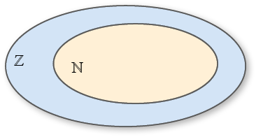
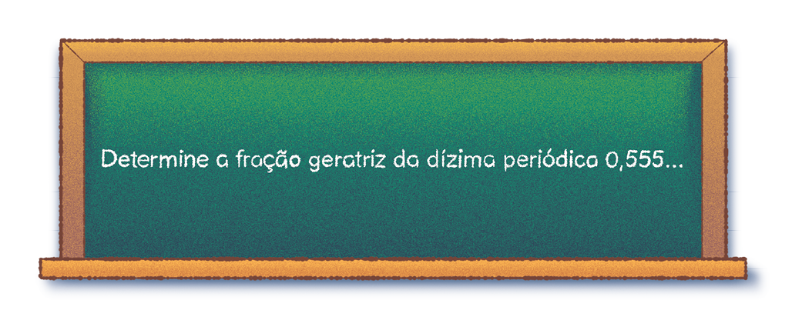
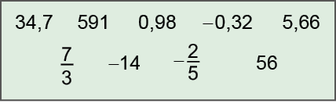

UNIDADE 1 - Conjuntos numéricos
![Infográfico ocupa página inteira de abertura da Unidade 1 com o título Conjuntos Numéricos. O infográfico é uma ilustração de dois golfinhos, um adulto e um filhote com informações textuais. Os dois golfinhos nadam em direção à esquerda. Ao fundo, peixes, o mar azul e pedras. Linhas ligam as pedras ao texto: Hábitat: a espécie costuma ser encontrada em baías, estuários e desembocaduras de rios. Das nadadeiras do golfinho adulto, o texto: uma linha liga ao texto: O boto-cinza é um animal robusto, com nadadeira dorsal em formato triangular. Entre a cauda do golfinho adulto e o corpo do filhote.](../../resources/images/8ANO_U1_image/golfinhos.png)
![Expectativa de vida: de 30 a 35 anos de idade. Abaixo do filhote, a frase: Gestação: dura 12 meses e o período de amamentação se prolonga por um ano. Outra linha liga a barriga do golfinho adulto ao texto: Coloração: tem cor cinza escuro no dorso e branco rosado no ventre. Uma linha liga os peixes no mar com a frase: Alimentação preferencial: sardinha, parati e robalo. Na parte debaixo do infográfico, quatro ilustrações, uma ao lado da outra com o título: Comparações de tamanho. Na ilustração 1, à esquerda, um mergulhador. Acima dele: Homem. Abaixo: 1,80 metro. Na ilustração 2, um boto-cinza. Tamanho: Entre 1,80 e 2,20 metros. Na ilustração 3, um boto-cor-de-rosa. Tamanho: até 2,55 metros. Na ilustração 4, um golfinho-flíper. Tamanho: de 2,70 a 3,40 metros.](../../resources/images/8ANO_U1_image/comparações_de_golfinhos.png)
Os golfinhos ou botos, animais muito inteligentes e ótimos nadadores, estão sofrendo com a poluição e a pesca. No infográfico, você pode observar, as regiões em que eles são encontrados no estado do Rio de Janeiro e algumas informações sobre esses animais.
11
![Continuação do infográfico. Dentro de um retângulo branco: Nome comum: Boto-cinza. Classe: Mammalia. Ordem: Cetacea. Sub-ordem: Odontoceti. Família: Delphinidae. Nome científico: Sotalia guianensis. À direita do retângulo, com o título Distribuição, o mapa do Brasil. Uma linha azul delineia a divisa dos estados com o Oceano Atlântico. Uma linha liga a região azul com o texto: Ocupa o Atlântico do Panamá, na América Central, até Santa Catarina. Um retângulo sobre o Estado do Rio De Janeiro seguida de uma flecha. Abaixo um retângulo com o mapa do Rio de Janeiro, destacando 3 locais com a respectiva quantidade de golfinhos. À esquerda, um círculo azul identifica a Ilha Grande: 800 a 1.000 golfinhos. À direita, em um círculo verde: Baía de Sepetiba: 1.000 a 1.200 golfinhos. Mais à direita, em um círculo marrom: Baía de Guanabara: 40 golfinhos. O mapa destaca ainda a Barra da Tijuca, o centro e Ipanema. Os três entre a Baía de Sepetiba e Niterói. Mais abaixo do retângulo, as legendas com as cores dos círculos: Azul: É a baía mais preservada do estado, pois grande parte do território é formado por zonas de ocupação controlada. Legenda verde: Tem sido alvo de grandes
empreendimentos industriais e portuários e ponto de despejo de esgoto. Está em processo de degradação. Legenda marrom: Altamente degradada pela intensidade de atividades portuária e industrial, falta de saneamento e pesca predatória. Fonte: Estadão. Disponível em: http://www.estadao.com.br/infograficos/cidades,poluicao-ameaca-golfinhos,169992. Acesso em: 18 abr. 2022. (Adaptado).](../../resources/images/8ANO_U1_image/concentração-golfinhos.png)
CONVERSE
- De acordo com o infográfico, qual é a expectativa de vida e o tempo de gestação de um boto-cinza?
- No infográfico, há várias informações numéricas sobre os golfinhos. Dos números que aparecem, cite exemplos que pertencem ao conjunto dos números naturais, inteiros e racionais.
- Os números que mostram o tamanho do homem e dos golfinhos citados podem ser transformados em números fracionários? Como ficaria essa representação?
12
CAPÍTULO 1 - Ampliando o estudo sobre os números naturais, inteiros e racionais
Conjuntos dos números naturais, inteiros e racionais
Observe os ingredientes necessários para fazer uma torta de maçã.
Ingredientes:
- 2 maçãs grandes
- xícara (chá) de açúcar
- 2 colheres (chá) de canela em pó
- 2 colheres (sopa) de margarina derretida
- 1 ovo inteiro
- xícara (chá) de farinha de trigo
- 1 colher (chá) de fermento em pó
- Margarina para untar e farinha de trigo para polvilhar a fôrma
A quantidade utilizada de cada ingrediente é representada por números racionais.

- Troque ideias com um colega e escrevam, no caderno, os números que aparecem na receita e representam números naturais, inteiros e racionais.
- O número misto pode ser transformado em fração e número decimal. Como podemos representá-lo nessas formas?
13
Vamos relembrar os conjuntos numéricos aos quais pertencem os números que aparecerem na receita.
Conjunto dos números naturais (N)
Conheça os prédios mais altos no critério de altura arquitetônica, que leva em conta o projeto original e desconsidera antenas adicionadas posteriormente.
![Gráfico de barras verticais com o título “Os 10 edifícios mais altos do mundo”. Eixo horizontal nomeado “Edifícios” com os 10 edifícios identificados por cores. Eixo vertical esquerdo nomeado “Altura (m)”, de baixo para cima, variando de 0 a 900 metros. O gráfico exibe dez barras verticais. A barra 828, em azul marinho, corresponde a Burj Khalifa (Dubai - Emirados Árabes Unidos). A barra 632, em verde, Shanghai Tower (Xangai - China). A barra 601, em laranja, Makkah Clock Tower (Meca - Arábia Saudita). A barra 599, em amarelo, Ping An Finance Centre (Shenzhen - China). A barra 554,5, em azul claro, Lotte World Tower (Seul - Coreia do Sul). A barra 541,3, em marrom, One World Trade Center (Nova Iorque - Estados Unidos). A barra 530, em roxo, Guangzhou CTF Finance Centre (Cantão - China). A barra 530, em rosa, Tianjin CTF Finance Centre (Tianjin - China). A barra 528, em verde escuro, China Zun (Pequim - China). A barra 508, em verde limão, Taipei 101 (Taipei -Taiwan). Fonte: Casa vogue. Disponível em: https://casavogue.globo.com/Arquitetura/Edificios/noticia/2019/10/conheca-os-10-predios-mais-altos-do-mundo.html. Acesso em: 19 abr. 2022.](../../resources/images/8ANO_U1_image/Grafico_Uni1_edificios.png)
![Gráfico de barras verticais com o título “Os 10 edifícios mais altos do mundo”. Eixo horizontal nomeado “Edifícios” com os 10 edifícios identificados por cores. Eixo vertical esquerdo nomeado “Altura (m)”, de baixo para cima, variando de 0 a 900 metros. O gráfico exibe dez barras verticais. A barra 828, em azul marinho, corresponde a Burj Khalifa (Dubai - Emirados Árabes Unidos). A barra 632, em verde, Shanghai Tower (Xangai - China). A barra 601, em laranja, Makkah Clock Tower (Meca - Arábia Saudita). A barra 599, em amarelo, Ping An Finance Centre (Shenzhen - China). A barra 554,5, em azul claro, Lotte World Tower (Seul - Coreia do Sul). A barra 541,3, em marrom, One World Trade Center (Nova Iorque - Estados Unidos). A barra 530, em roxo, Guangzhou CTF Finance Centre (Cantão - China). A barra 530, em rosa, Tianjin CTF Finance Centre (Tianjin - China). A barra 528, em verde escuro, China Zun (Pequim - China). A barra 508, em verde limão, Taipei 101 (Taipei -Taiwan). Fonte: Casa vogue. Disponível em: https://casavogue.globo.com/Arquitetura/Edificios/noticia/2019/10/conheca-os-10-predios-mais-altos-do-mundo.html. Acesso em: 19 abr. 2022.](../../resources/images/8ANO_U1_image/Grafico_Uni1_edificios_0.png)
Para indicar a altura dos edifícios e a posição ocupada no ranking mundial por cada um deles, foram usados os números naturais.
Representamos o conjunto dos números naturais por:
ℕ = {0, 1, 2, 3, 4, 5, 6, 7, ...}Todo número natural possui um sucessor que pode ser obtido adicionando-se 1. E todo número natural possui um antecessor, com exceção do zero, que pode ser encontrado subtraindo-se 1.
Podemos representar os números naturais em uma reta numérica, observe:
Para cada número, associamos um ponto na reta numérica, lembrando que a distância entre dois pontos consecutivos deve ser sempre a mesma.
14
Conjunto dos números inteiros (ℤ)
Nas imagens a seguir, podemos observar duas cidades e suas temperaturas registradas em um dia do mês de janeiro. Enquanto no Rio de Janeiro há uma temperatura de 38ºC, em Kiev, capital da Ucrânia, pode-se ter temperaturas negativas.
Para indicar as temperaturas nessas cidades, foram usados números inteiros.
Representamos o conjunto, ao qual esses números pertencem, por:
ℤ = {..., -3, -2, -1, 0, 1, 2, 3, ...}
Assim como os naturais, os números inteiros também possuem um sucessor e antecessor que podem ser representados em uma reta numérica, observe:

Observando a reta numérica, podemos citar alguns exemplos de números que são opostos ou simétricos e também os seus sucessores e antecessores, veja:
- -4 e 4 são números opostos;
- -4 é o sucessor de -5;
- 4 é o antecessor de 5.
- -9 e 9 são números opostos;
- -9 é o antecessor de -8;
- 9 é o sucessor de 8.
15
Lembre-se que ℕ ⊂ ℤ.
Conjunto dos números racionais (ℚ)
De acordo com o Sebrae, houve um aumento no números de formalizações de microempreendedores individuais durante a pandemia.
Apesar dos fortes impactos da pandemia da COVID-19 sobre a economia brasileira, o número de microempreendedores individuais (MEI) continuou a crescer e tem batido recordes de formalizações ano a ano. Somente em 2020 e 2021, foram criados 5,7 milhões de MEI, sendo que a atividade que mais apresentou adesões foi a de comércio varejista de artigos de vestuário e acessórios, com cerca de 380 mil formalizações.
As informações constam em levantamento feito pelo Sebrae, com base em dados da Receita Federal entre os anos de 2018 e 2021. “Devido às suas características, essa atividade sempre se manteve entre as com maior número de formalizações, mas desde o início da pandemia ela passou a ocupar o primeiro lugar, superando o segmento de cabelereiros, manicures e pedicures, que esteve na primeira colocação no ranking durante os anos de 2018 e 2019”, observa o presidente do Sebrae, Carlos Melles. A segunda atividade mais procurada pelos microempreendedores individuais durante a pandemia foi a de promoção de vendas, com 314,5 mil novos negócios. [...]
“As empresas do segmento de beleza estão entre as que mais apresentaram queda de faturamento, chegando a registrar perdas de até -76%. Além disso, cerca de 12% dessas empresas ainda se encontram com o funcionamento interrompido, de acordo com a última pesquisa de impacto realizada pelo Sebrae”, comenta o presidente do Sebrae.
Fonte: Sebrae. Disponível em: https://cutt.ly/IL8Z9gh. Acesso em: 19 abr. 2022.
As informações numéricas que aparecem no texto pertencem ao conjunto dos números racionais.
Representamos o conjunto dos números racionais por:
Lembre-se de que todo número inteiro é um número racional.
16
Os números racionais também podem ser representados na reta numérica. Observe a representação de alguns números.
- -2,5
- 3,4
As frações podem ser transformadas em números decimais. Para isso, basta dividirmos o numerador pelo denominador.
Quando fazemos essa divisão, o resultado encontrado pode ser um número decimal exato ou uma dízima periódica.
| = 0,8 |
decimais exatos |
= 0,333... |
dízimas periódicas |
|||
| = 1,25 | = 4,666... |
A dízima periódica apresenta um ou mais algarismos que se repete infinitamente representando o período do número.
Quando a parte decimal é composta apenas pelo período, a dízima é classificada como dízima periódica simples. Já quando além do período existir, na parte decimal, algarismos que não se repetem, será uma dízima periódica composta.
A fração que dá origem à dízima periódica é chamada de fração geratriz.
Fração geratriz
Vamos verificar como podemos encontrar a fração geratriz que deu origem a uma dízima periódica.
Situação 1
17
Vamos escrever uma equação considerando a dízima periódica igual a x.
|
x |
= |
0,555... |
||
|
|
10 · x |
= |
10 · 0,555... |
Como o período da dízima é 5, multiplicamos ambos os membros da igualdade por 10. |
|
10x |
= |
5,555... |
||
|
- |
x |
= |
0,555... |
Subtraímos a equação original da equação encontrada. |
|
9x |
= |
5 |
||
|
x = |
||||
Portanto, a fração geratriz da dízima periódica 0,555... é . Se dividirmos 5 por 9 iremos obter 0,555...
Situação 2
Vamos escrever uma equação considerando a dízima periódica igual a x.
|
x |
= |
1,32121... |
Multiplicamos por 10 ambos os membros da igualdade, pois o 3 não faz parte da dízima, devemos multiplicar a equação por 10 para que fique apenas a dízima. |
||
|
(I) |
10 x |
= |
13,2121... |
||
|
(II) |
100 · 10x |
= |
100 · 13,2121... |
Como o período da dízima é 21, multiplicamos ambos os membros da igualdade por 100. |
|
|
1 000x |
= |
1 321,21... |
|||
|
1 000x |
= |
1 321,21... |
Subtraímos I de II para eliminar a parte decimal. |
||
|
- |
10x |
= |
13,21... |
||
|
990x |
= |
1 308 |
Portanto, a fração geratriz da dízima periódica 1,32121... é .
18
►Encontre soluções
- No quadro a seguir, identifique e escreva, em seu caderno, os
números que pertencem a cada um dos conjuntos: números naturais, inteiros e racionais.

- Em seu caderno, represente na reta numérica, os números - 4; 0,5; ; 3 e -2,3.
- A tabela abaixo mostra a idade de quatro atletas
de uma equipe de basquete, faltando apenas a idade do 5.º jogador.
22 23 22 25 ? A média de idade dessa equipe é de 23 anos. Qual é a idade do 5.º jogador?
- Escreva na forma decimal.
- Determine a fração geratriz das dízimas periódicas
a seguir:
- 0,777...
- 1,4333...
- 0,2626...
- 0,444...
- 0,111...
- -0,222...
- 0,333...
- 0,090909...
- Calcule:

7.(OBMEP) O pé de Maurício tem 26 cm de comprimento. Para saber o número de seu sapato, ele multiplicou essa medida por 5, somou 28 e dividiu tudo por 4, arredondando o resultado para cima. Qual é o número do sapato de Maurício?
- 38
- 40
- 42
- 39
- 42
8.(OBMEP, 2006) A figura representa parte de uma régua graduada de meio em meio centímetro, onde estão marcados alguns pontos. Qual deles melhor representa o número 2x + 1?
- R
- S
- T
- U
- V